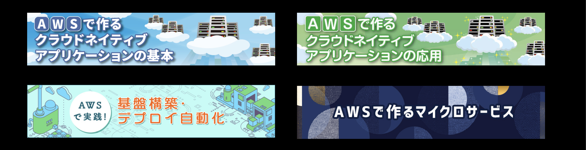

CloudNative & Microservice
Tec Academy
Season 8
2023.10.12 Kick off
塾長紹介
- 名前：川畑 光平
- 所属：クラウド技術部
- 2007年入社 金融事業本部→技術開発本部→生産技術部→現所属
- 朝霞市在住(独身の頃は秋葉原に10年在住)
- 趣味・ハマったこと
- [2000〜] ドライブ/読書(時事問題)/自動2輪/インテリア/Java
- [2010〜] 美味しい店探し/Spring/料理/スノボ/AWS/水泳
- [2020〜] 技術記事・書籍執筆/DQウォーク/子育て/英語
- [2023〜] FF14/子育て
- 長崎県出身
- 大石 現長崎県知事と同級生
- 劇団 EXILEの秋山くんと同級生
- DEEPの前田さんは中学校の先輩
- 学生の頃Appleでバイトしてました(iPodが流行った頃)
- 2016年末に結婚
- 2019.2に長男が誕生 / 2023.1に長女が誕生

2021.3 家族でお花見
2021.9 電車大好き
2021.9 電車大好き
2022.1 初めての雪山(軽井沢)
2022.9 京王レールランド(8回目)
2022.11 ゲームするより先にリアルマリオワールド

2023.1 長女 美怜(みれい)誕生！
2023.1 一丁前に面倒見たがるオニイやん
このスライドの使い方

※当スライドは 「reveal.js」 を使って、GitHub Pages上に作成
塾の活動目的
- これまで塾長・塾生が蓄積してきたSpring/AWSをベースとした技術検証・ナレッジのトランスファーを通してトップ人材(フルスタックエンジニア)を育成
- 初級〜中級技術者を対象とした育成コンテンツの整備・スキルマップの定義
- デジタル技術リファレンスアーキテクチャの整備・公開
技術テーマ
- マイクロサービスアーキテクチャ
- クラウドネイティブアプリケーションデザインパターン
- リアクティブプログラミング/サーバレス
- NoSQLデータモデリング・実装
- ニュージャンル
※詳細は末尾記載のシラバスを参照
マイクロサービスアーキテクチャ
| テーマ | 着手 | Level |
|---|---|---|
| Cell-Based Architecture on AWS の検証 | 3 | |
| サービス連携処理パターンの検証 (オーケストレーション/コレオグラフィ/SAGAパターン等) |
[S1]能勢さん [S3]大澤さん[S5]神谷さん[S5]丸尾さん[S7]木村さん |
3 |
| ドメイン駆動設計を用いたマイクロサービスモデリング手法検証 | [S2]後藤さん[S5]尾崎さん [S6]古川翔さん |
3 |
| 分散トレーシング・テレメトリ(X-Ray/Grafana) | [S2]羽田さん | 2 |
| ログ出力方式ベストプラクティス(CloudWatchLogs/Fluentd/ElasticSearch/Kibana/ AWSGlue/Athena/Prometeus) |
2 | |
| OpenIDConnect/OAuth2/認証・認可処理パターン検証 | [S2]山田さん [S4]鮒田さん[S6]本山さん |
3 |
| JakartaEE-Eclipse MicroProfile検証 | 3 | |
| MicroServiceFramework Daprの検証 | [S1]宇都宮さん | 3 |
| MicroServiceにおけるCI/CDの検証 | [S7]中村さん | 2 |
クラウドネイティブアプリケーションデザインパターン
| テーマ | 着手 | Level |
|---|---|---|
| オンライン非同期処理パターン(Spring Cloud Stream/Spring Integration/Amazon Managed Streaming for Kafka/Kinesis) | [S2]榎本さん | 3 |
| クラウドバッチ処理パターン(SpringCloudAWS/AmazonSQS/AWSBatch/SpringBatch/ AWSStepFuntions) |
[S1]橋本直さん [S4]斎藤さん |
3 |
| コンテナ&サーバレス連動処理パターン (AWS Lambda/AmazonElastiCache/WebSockets) |
[S4]相川さん[S5]日置さん[S6]藤城さん | 3 |
| マネージドサービス連携ベストプラクティス(AmazonS3/AmazonSQS/AmazonMQ/AmazonSNS) | [S4]日暮さん [S7]藤城さん(SQS) |
2 |
| EKS/AppMesh/SpringCloudKubernetes/サービスメッシュ検証 | [S6/7]古川琢さん | 3 |
| 教育コンテンツ(チャットアプリケーション)の開発 | [S1]橋本翔さん | 2 |
| CloudFormationを用いたアプリケーションDevOps基盤自動化資材の開発 | [S3]赤荻さん [S3]田中さん [S3]磯崎さん [S4]古谷さん |
2 |
| オンプレミスからのクラウドシフトアプリケーションアーキテクチャ | [S1/S3]横井さん | 2 |
| オンプレミスからのマイグレーション・モダナイぜーション戦略 | [S7]古川翔さん | 2 |
リアクティブプログラミング/サーバレス/NoSQLデータモデリング
| テーマ | 着手 | Level |
|---|---|---|
| GraalVM/Micronaut/Quarkus/SpringCloudFuntion on AWS Lambda検証 | [S3]山浦さん | 3 |
| SpringWebFluxの特徴・実装ノウハウの整理 | [S1/S2]伊藤さん | 3 |
| サーバレスアーキテクチャパターンonAWSの整理 | [S3]成島さん [S3]小川さん[S6]桶谷さん[S6]舘さん |
2 |
| AmazonDynanoDB/ApacheCassandraService等 AP型NoSQLの特徴/運用ノウハウ/データモデリング手法確立 |
[S7]長瀬さん | 3 |
| AmazonElastiCache/SpringSession/SpringDataRedis を使ったスケラーブルアプリケーションノウハウ整理 |
2 | |
| ApacheCassandraService/BigData(ApacheSpark/Hadoop/ ElasticMapReduce)連携検証 |
3 |
ニュージャンル
| テーマ | 着手 | Level |
|---|---|---|
| AWS IoT検証(AWS IoT Core/Device Management/ /Analytics/SiteWise等) |
2 | |
| エッジコンピューティングアーキテクチャ on AWS検証 | 3 | |
| AWS SystemsManagerエンタープライズ運用 ベストプラクティスの整理 |
2 | |
| AmazonCodeGuru(コードレビュー自動化)検証 | 2 | |
| AmazonSumerian(VR/AR)検証 | 2 | |
| ML/AIサービス検証(Amazon SageMaker等) | 2 | |
| モバイルアプリケーション(AWS MobileHub/ Amplify/iOS/Android)教育コンテンツ整備/ アーキテクチャパターン検証・実装ノウハウの整理 |
2 | |
| Kotlin/Go/Angular/React/Python検証・実装ノウハウの整理 | 2 | |
| アプリケーションマネージドサービス検証(AppStream/AppSync/AppRunner) | [S3]佐藤さん | 2 |
| AWS Gameday/JAM トレーニングコンテンツの作成 | [S5]山谷さん | 2 |
| GraphQLおよびAWS AppSyncのベストプラクティス検証 | [S6]雲下さん | 2 |
| データアナリティクスサービス(Athena/Glue)検証 | [S6]東浦さん | 2 |
塾における技量レベル
| Grade | 各技量の要件・業務経験の目安 |
|---|---|
| Grade5 |
・Redhat Certificated Architect相当 ・アプリケーション基盤開発のほぼ全ての機能設計・実装をリーダとして従事した経験 |
| Grade4 |
・Pivotal Certificated Spring Professional相当 ・TERASOLUNA認定アーキテクト相当 ・Oracle Certified Master Enterprize Architect相当 ・Redhat Certified Engineer相当 ・AWS Certificated Solution Architect/Developer Professional相当 ・アプリケーション基盤開発で主要な機能設計・実装をリーダとして従事した経験 |
| Grade3 |
・Oracle Certifies Java Programmer Gold相当 ・TERASOLUNA認定プログラマ相当 ・LPIC level3相当 ・AWS Certificated Solution Architect/Developer Associate相当 ・アプリケーション基盤開発で主要な機能設計・実装を複数従事した経験 |
| Grade2 |
・Oracle Certifies Java Programmer Silver相当 ・LPIC level2相当 ・アプリケーション基盤開発に複数従事した経験 |
| Grade1 |
・Oracle Certifies Java Programmer Bronze相当(研修受講済程度) ・LPIC level1相当(研修受講済程度) |
技量レベルとテーマのレベルの目安

 技量が満たないからといって、高いレベルのテーマをやるのはNGというわけではない
技量が満たないからといって、高いレベルのテーマをやるのはNGというわけではない
技量レベルの向上のために
| Grade | Recommendation |
|---|---|
| Grade4 |
・技術の最新動向を追いかけよう。AWS re:InventやSpringFEST等積極的に外部イベントに参加。 ・1つのテーマがまとまったら外部発表しよう。その分野の第一人者を目指すべし。 ・より技術の裾野を広げよう。 |
| Grade3 |
・Grade4相当の資格取得を目指そう。TERASOLUNAアーキテクト資格相当の技量がないとAP基盤リーダは任されない。 ・技術の最新動向を追いかけよう。AWS re:InventやSpringFEST等積極的に外部イベントに参加。 ・自分ひとりで本格的なアプリケーションを実装して、デプロイまでもっていけるようになること。お薦めはチャットメッセージアプリケーションのマイクロサービスアーキテクチャ構成。 |
| Grade2 |
・Grade3以上の資格取得を目指そう。おすすめの書籍は別紙を参照。 ・資格取得に必要な様々な研修を受講しよう。 ・自分ひとりで本格的なアプリケーションを実装して、デプロイまでもっていけるようになること。お薦めはチャットメッセージアプリケーションのマイクロサービスアーキテクチャ構成。 ・実装作業イメージがわかないのであれば「AWSで作るクラウドネイティブアプリケーション」や「AWSで実践! 基盤構築・デプロイ自動化」の記事の内容をそのまま実施。 |
| Grade1 |
・まずはGrade2以上の資格取得を目指そう。おすすめの書籍は別紙を参照。 ・資格取得に必要な様々な研修を受講しよう。 ・「AWSで作るクラウドネイティブアプリケーション」や「AWSで実践! 基盤構築・デプロイ自動化」の記事の内容をそのまま実施。 |
技量レベル向上のためのおすすめ資格ガイド
| Certification | Description |
|---|---|
| Redhat Certified Architect | Redhatの最上位資格。RHCE認定が前提条件の上、5つのエキスパート資格が必須。持っていれば何も言うことはない。 |
| Oracle Certifies Master Enterprize Architect | Oracle JavaEEエンタープライズアーキテクトの最上位資格。EJB、CDI、JPA、JSF、JAX-RS、JAX-WSといったJavaEEに関する広範囲な知識を問われる。問題は英語のみ。グローバルに通用する資格であるし、JavaEEは社外(Oracle、IBM、NEC、HITACHI、FUJITSU)で使われているケースが結構多いので、必ずしも取得する必要はないが、知識や実装方法を押さえておくとベター。 |
| TERASOLUNA認定アーキテクト | TERASOLUNA認定プログラマの内容に加えて、GoFアーキテクチャパターンやJavaのスレッドセーフ問題、TERASOLUNA開発手順等、Java-Webアプリケーションを開発する上で広範囲な知識が問われる。お薦めの書籍を読んだり、業務の中で地道にSpringを使った実装、TERASOLUNA開発手順等、知識を積み上げていく必要がある。 |
| Pivotal Certificated Spring Professional | SpringFrameworkを使ったアプリケーション実装に必要な広範囲の知識を問われる。問題は英語だが、詳細はカサレアルの研修サイトが詳しい。Springで一連の機能を使ったアプリケーションを作成すると解きやすい問題構成。 |
| Redhat Certified Engineer | Redhatの上位資格。3.5Hの実技試験で出題範囲が広範囲に渡り問題数が多い(Webサーバ、メールサーバを立てなさい等、詳細はこちらが詳しい)。LPIC2以上相当の知識を持って受講した方が良い。 |
| AWS Certificated Solution Architect/Developer Pro/Associate | AWSの認定資格。SAは広範囲にAWSのサービスや使い方を押さえておく必要がある。Developerは開発者向けのサービスを重点的に把握しておく。アソシエイトは認定資格対策すれば十分取得はしやすいが、プロフェッショナルは相応の学習が必要。対策本を2022.2に出版/Developerアソシエイト対策講座開講(2023.11/2024.2)。興味がある人は受講してください。 |
| LPIC level3 | 選択式問題だが、分野が細かく分かれ深い知識・実務経験を要求される。クラウドの普及であまり自前でLinuxサーバを立てて独学演習する機会も少なくなってきたので、先にRHCE対策講座や専門の試験対策講座を受講するとよい。 |
| TERASOLUNA認定プログラマ | SpringやMyBatisを使ったWebアプリケーションの実装方法などの見識を中心に問われる。SpringProfessionalの対策と同時に進めるとベター。 |
学習ステップ
| ターゲット | TODO |
|---|---|
| (1)全くJavaアプリケーション実装経験なくて不安な人 | TERASOLUNAのチュートリアルやってみてください。 |
| (2)TERASOLUNAの経験は多少ある人 | Spring Bootのチュートリアルやってみてください。※社内リンクにつき注意 |
| (3)AWSクラウド触ったことなくて不安な人 | AWSの無償ハンズオンやってみてください。 |
| (4)上記(1)(2)(3)を済ませたor相応の知識がある人 | 塾長のWeb記事「クラウドネイティブアプリケーションの基本」やってみてください。第4回から順に。※第1-3回はサーバレスなのでスキップして良いです |
| (5)上記の(4)まで一通り終えた人 | 塾長のWeb記事「AWSで実践! 基盤構築・デプロイ自動化」を読んで、幅出しとして、CI/CDや基盤自動化やってみてください。※軽く読んで、つまみ食いな形でOK |
| (6)上記の(1)-(5)を大体やり終えた人 | 塾長のWeb記事「クラウドネイティブアプリケーションの応用」に進んでください。ただし、(1)-(5)の内容がたびたび出てくるので適宜戻りながら進めてください。 |
| (7)とにかくマイクロサービスに触れたい人 | 塾長のWeb記事「AWSで作るマイクロサービス」に進んでください。ただし、(1)-(5)の内容がたびたび出てくるので適宜戻りながら進めてください。 |
検証用教材：チャットアプリケーション
チャットアプリケーションのアーキテクチャ

チャットアプリケーション構築のポイント
- アプリケーションの基本的な要件
- フロントにBFF(BackendForFrontend)となるチャットアプリケーションをECSクラスタ構成で配置し、ブラウザとモバイルのリクエストをアグリゲーションする。ブラウザ向けにはWebページを返し、モバイル向けにはJSONデータを返却する。コンテナアプリケーションはマルチアベイラビリティゾーンでスケールアウト可能な構成とし、セッションデータやキャッシュはElastiCacheRedisに保存すること。いったん、バックエンドのサービス処理はBFFでオーケストレーションするものとするが、応用編のオプションとしてコレオグラフィでのマイクロサービスアーキテクチャ構成を考える。
- バックエンドはマイクロサービス構成とする。機能はチャットサービスとユーザ管理サービス。チャットサービスはBFFと同様ECS(Fargate)構成、ユーザ管理はAppMesh+EKSで構成する。全てのアプリケーションはマルチアベイラビリティゾーンでスケールアウト可能な構成で冪等性を担保し、ステートレスに実装すること。
- チャットサービスでは、NoSQLデータベースとしてDynamoDB(CassandraService応用編オプションも追加)、ユーザ管理ではRDSにそれぞれデータ保存する。応用編のオプションでSpringDataReactiveなどを使ってノンブロッキングなデータ入出力ができるようにする。
- 認証はBFFで、SpringSercutiry+AWS Cognitoで行う。認可はとりあえず考慮しないが、応用編のオプションでOAuth2+Keycloak認証認可の仕組みを導入し、マイクロサービスへのアクセスを制御する。
- チャットサービスではクライアントにリアルタイムにメッセージ通知されるように、WebSockets通信する。モバイルは別途プッシュ通知も利用する。応用編のオプションでSpring5.3のRSocket通信ができるようにする。
- チャットサービスでは写真や動画も送信できるようにするが、S3へダイレクトアップロードするものとし、サムネイルの作成などの重たい処理はAWS Lambdaに実行させる仕様とする。処理完了後はSQSやプッシュ通知を利用して、クライアントにサムネイルイメージをS3からダイレクトダウンロードさせる。AmazonSTSを使って短時間のみS3へアクセス可能な署名キーを発行すること。応用編のオプションでは画像や動画の機械学習サービスを使った解析やイベント通知ができるようにする。
- アプリケーションの環境はCodePipeline+CodeBuildを使ったCI/CDを仕組みを導入する。
- アプリケーションやCI/CD環境はCloudFormationを使ってInfrastructureAsCodeとしてコード化しておくこと。
デジタル技術リファレンスアーキテクチャ For AWS
様々な技術を身に付けることも大事だが、同時に技術を駆使して、デジタルトランスフォーメーション(DX)を実現できるスキルをもつことが重要である。
DXに必要な共通点とは？
- ユーザエクスペリエンス(体験)の向上
- 有益なデータの収集・蓄積・解析/加工・活用
- トライアンドエラーの継続
ユーザエクスペリエンス向上のポイント - マッチング
データと人のタイムリーなマッチング
有益なデータをいかに収集・蓄積・解析/加工・活用するか
有益なデータをいかに収集するか
有益なデータをいかに蓄積するか
有益なデータをいかに蓄積するか
有益なデータをいかに解析/加工するか

有益なデータをいかに活用するか
組織として一気通貫してカバーできるデータ関連技術ケイパビリティが重要
クラウドやマイクロサービスの特性を生かしながら継続的にDXを進めること

- 素早く作ってビジネスアイデアを検証
- 不要になったら破棄
- 最小限のリソースでコスト削減
- ビジネスの見込みが立ったら拡大
- 様々なサードパーティへAPI公開
- 繰り返して経験値・技術を蓄積
より広い視点でデータ指向リファレンスアーキテクチャを考えること
塾の運営・作業の進め方
共通作業環境(詳細はTrelloのWikiの設定情報タブを確認すること)
※CloudFormation環境構築資材はこちら共通作業環境の主な利用方法
環境利用時の注意事項
塾における作業要領・ルール
- 各ジャンル・テーマごとにTrelloでボード・カードを作成し、自分が着手しているテーマ・作業に名前を入れて、状況・プログレスを記載すること(任意：聴講生は複数人が同じテーマを別々にやっても可)。
- 共通環境とは別に各自VPC・サブネットを割り当てるので、テーマによってその中で環境は自由に構築しても良い。作業を進める場合は、自分が検証した内容や作業状況等、他の人に説明できるような形で必ずメモを残すこと（必須）。 基本的にGitHubPageで、マークダウンツールやSphinx/Asciidocを作成する等して記録を残すやり方を推奨。ドキュメントや環境構築は こちらのガイドラインを参照のこと。ソースコード資材や、AWS上での環境構築は こちらのようにコード化することが望ましい(最初は厳しくても徐々に作業を何らかの形で保存しておく)。 AWSでの基盤自動化(CloudFormation)の環境構築や実装方法はマイナビ記事を参考にすること。
- 成果物としてまとめたメモ・ソースコードをウォークスルー/整形/英語化するなどして、適宜公開する形式をとる。
- トラブルシューティングや技術相談向けのコミュニケーションツールでMattermostを使用する(Teamsは事務連絡用途を想定。Mattermostでは新しいメンバが加わった場合でも、相互に顔と名前が一致しやすいようにしたいので極力顔写真を使って欲しい)。作業を進める中でトラブルシューティング等が必ず発生するので、自力で解決できない場合はヒアリング。塾生・聴講生同士でも助け合って欲しい(それが自己の学習に繋がったりする)。
- ミーティング/勉強会は週一度2時間枠(毎週木曜日16:00-18:00)で基本オンラインと対面(今季から増やします)で実施する)。塾生は最低2週間に1度は状況報告・相談や作業内容の発表。聴講生は任意で質問・相談・発表可(たまに塾長から指名される場合もある)。
特別講義・ディスカッション・イベント
| 時期 | 特別講義・ディスカッション・イベント |
|---|---|
| 2023.10 | レクチャー1：Cloud Native / Micro Service VS On Premise / Monolithic |
| 2023.10 | レクチャー2：シンプルな認証Webアプリケーション |
| 2023.11 | レクチャー3：バックエンドサービス |
| 2023.11 | レクチャー4：AWS X-Rayを使ったマイクロサービスの可視化 |
| 2023.11 | レクチャー5：OAuth2/OpenIDConnectの基本 |
| 2023.12 | イベント : AWS re:Invent recap |
| 2023.12 | レクチャー6：AWS Cognito + Spring Securityを利用したOAuth2ログイン |
| 2023.12 | レクチャー7：アクセストークンによるバックエンドマイクロサービスの保護 |
| 2024.1 | レクチャー8：AWS ELB/ECS/RDS/ElastiCache/SQS解説 |
| 2024.1 | レクチャー9：AWS API Gateway/Lambda/DynamoDB/S3解説 |
| 2024.1 | イベント AWS Gameday / JAM for NTT DATA Global(塾生は原則参加ください) |
| 2024.1 | レクチャー10：AWS CodeCommit/CodeBuild/CodeDeploy/CodePipeline解説 |
| 2024.2 | レクチャー11：AWS Route53/CloudFront解説 |
| 2024.2 | レクチャー12：AWS CloudWatch/CloudTrail/X Ray解説 |
| 2024.X | 長谷川さんのレクチャー |
| 2024.X | AWSさんのレクチャー(Amazon Bedrock / Code Whisperer) |
その他の活動
- 技術書籍/Web記事の執筆/対外発表(テーマの新規性・内容・難度によって機会提供するのでご相談ください)
- AWS認定資格 Develper 対策セミナー 2023.11
- Global CAC(Cloud Architect Community) イベント 2023.10.31-11.2（英語力と技術スキルをどう育んでいくか）
課外学習活動 FF14部
MMO(Massively Multiplayer Online)ゲームで学ぶ、「英語」と、マルチソフトウェアクライアント間での不特定多数&多元的コラボレーションを実現する「次世代クラウドアーキテクチャ」を考える
参考書籍

参考サイト

シラバス：マイクロサービスアーキテクチャ
-
miciroservices.ioや12 Factor Appで設計原則/アーキテクチャパターン/サンプル実装例など公開されている。
- Database per Service Pattern, Saga Pattern, CQRS Pattern, Event sourcing Pattern etc.
- Transactional outbox Pattern, Polling publisher Pattern etc.
- Circuit Breaker, Access Token, Side Car Pattern etc.
- サンプル実装の検証や、AWS環境下における実現例、応用方法などを体系化して整理する。
- 拡張したCell-Based Architectureの検証や今後求められるアーキテクチャについても検証・考察を行う。
| テーマ | Cell-Based Architecture on AWS の検証 |
|---|---|
| 概要・目的 | AWS re:Invent2018、2019 Keynoteやセッションで触れられたCell-Based Architectureについて、概要や特徴を整理し、AWSクラウドにおいて、実装例を構築する。 |
| レベル | Level3 |
| 必要となる主な知識・技術 |
・AmazonSQS・MQなどのメッセージングサービス ・SpringBoot、SpringCloudAWS、SpringJMSなどを使用したRESTful、メッセージングアプリケーション実装 ・AmazonECS、EKS、RDS、DynamoDB等のアプリケーション環境の基盤 ・マイクロサービスアーキテクチャパターン |
| 成果物例 |
・概要や特徴、メリットデメリット、ノウハウ等を体系化して整理したドキュメント(日本語・英語) ・実装例のサンプルコード |
| 参考資料 |
・Cell-Based Architecture ・AWS re:invent2019 Keynote Werner Vogels ・miciroservices.io |
| テーマ | マイクロサービス連携処理パターンの検証 (オーケストレーション/コレオグラフィ/SAGAパターン等) |
|---|---|
| 概要・目的 | MicroServiceアプリケーションでは、異なるドメインに属するサービスを跨ぐトランザクション処理が分離される。分散トランザクションの技法として、オーケストレーションやコレオグラフィ、補償トランザクションを体現したSAGAパターンなど体系的に整理し、AWS上での実装パターンなどを構築する |
| レベル | Level3 |
| 必要となる主な知識・技術 |
・AmazonSQS・MQなどのメッセージングサービス ・SpringBoot、SpringCloudAWS、SpringJMSなどを使用したRESTful、メッセージングアプリケーション実装 ・AmazonECS、EKS、RDS、DynamoDB等のアプリケーション環境の基盤 ・X/Open XAなどの分散トランザクションに関する知識 |
| 成果物例 |
・概要や特徴、メリットデメリット、ノウハウ等を体系化して整理したドキュメント(日本語・英語) ・実装例のサンプルコード |
| 参考資料 | ・miciroservices.io |
| テーマ | ドメイン駆動設計を用いたマイクロサービスモデリング手法検証 |
|---|---|
| 概要・目的 | マイクロサービスの粒度については、業務・機能ごとの他に、組織や開発体制、パフォーマンス/SLA等の開発要件に左右されるが、純粋な業務分割の観点からみた場合にドメイン駆動設計と相性が良いと言われている。ドメイン駆動設計のエッセンスを整理し、具体例を用いてサービスの分割、コンポーネントの粒度、責務分担の明確化、AWSにおける実装を行う。 |
| レベル | Level3 |
| 必要となる主な知識・技術 |
・エリックエバンスのドメイン駆動設計 ・UMLモデリング設計 ・SpringBoot/ECS/EKSなどを使用したRESTfulアプリケーション実装 |
| 成果物例 |
・概要や特徴、メリットデメリット、ノウハウ等を体系化して整理したドキュメント(日本語・英語) ・実装例のサンプルコード |
| 参考資料 |
・DDD本から理解するドメイン駆動設計 ・UML入門 |
| テーマ | ログ出力方式ベストプラクティス |
|---|---|
| 概要・目的 | マイクロサービスアーキテクチャでは、サービスが分割される関係上、処理トレーシングのためのログ出力設計が重要になる。他方、クラウドサービス/コンテナ・オーケストレーションツールの発達により様々なログ出力のためのサービス・ミドルウェアが登場している。ログの種類や用途、ユースケースにより適切なソリューションやその組み合わせが異なるため、AWS上におけるログ出力のベストプラクティスに関するノウハウを整理し形式知化する。 |
| レベル | Level2 |
| 必要となる主な知識・技術 |
・SpringBootを使用したアプリケーションのログ出力設計・実装 ・CloudWatchLogs、CloudTrailなどのマネージドサービスに関する知識 ・サードパーティ製ログミドルウェアに関する知識 |
| 成果物例 |
・概要や特徴、メリットデメリット、ノウハウ等を体系化して整理したドキュメント(日本語・英語) ・実装例のサンプルコード |
| 参考資料 |
・[Black Belt Online Seminar] AWS上でのログ管理 ・[Black Belt Online Seminar] Amazon CloudWatch ・ログ活用.com ・ログの「種類」とログ管理の「目的」を整理しよう！ |
| テーマ | OpenIDConnect/OAuth2/Cognito認証・認可処理パターン検証 |
|---|---|
| 概要・目的 | マイクロサービスの認証認可の仕組みとして、OAuth2やOpenIDConnectを使用した実装の形式知化を行う。また、OpenAMやKeycloakといったOSSに加えて、Cognitoを使用した認証、SpringSecurityとの連携方法などについて整理する。 |
| レベル | Level3 |
| 必要となる主な知識・技術 |
・SpringBoot、SpringSecurityなどを使ったアプリケーション設計・実装 ・OpenIDConnect/OAuth2をベースとした認証認可に関する知識 ・OpenAM、Keycloakなどのオープンソースアイデンティティソフトウェアに関する知識 ・AWS Cognitoなどのマネージドサービスに関する知識 |
| 成果物例 |
・概要や特徴、メリットデメリット、ノウハウ等を体系化して整理したドキュメント(日本語・英語) ・実装例のサンプルコード ・アーキテクチャパターンを一括構築するCloudFormationテンプレート等 |
| 参考資料 |
・Spring Security概要 ・OAuth ・OpenIDConnect ・Keycloak by OpenStandia Advent Calendar 2017 |
| テーマ | JakartaEE MicroProfile |
|---|---|
| 概要・目的 | JavaEE(JakartaEE)をベースとしたマイクロサービスの仕様を定めたEclipse MicroProfile。OSSであるOpen Libertyでの実装検証を通して、MicroProfileの知見・実装方法ノウハウなどを形式知化する。 |
| レベル | Level3 |
| 必要となる主な知識・技術 |
・JakartaEEを使用したアプリケーション設計・実装 ・Eclipse MicroProfileに関する知識 ・Open Liberty等MicroProfile実装アプリケーションサーバに関する知識 |
| 成果物例 |
・概要や特徴、メリットデメリット、ノウハウ等を体系化して整理したドキュメント(日本語・英語) ・実装例のサンプルコード |
| 参考資料 |
・Eclipse MicroProfile ・Open Liberty |
シラバス：クラウドネイティブアプリケーションデザインパターン
-
ECSやEKSなどのコンテナをはじめ、数々のマネージドサービスが新しく登場している。AWSクラウド上で
アプリケーションを構築する場合の処理パターンや、ベストプラクティスを整理する。
- オンライン非同期処理パターン
- クラウドバッチ処理パターン
- コンテナ・サーバレス連携処理パターン
- マネージドサービス連携処理ベストプラクティス
- オーケストレーション・サービスメッシュ比較検証
- 認証・認可系
- アプリケーション基盤環境構築のコード化
- サンプル実装の検証や、AWS環境下における実現例、応用方法などを体系化して整理する。
| テーマ | オンライン非同期処理パターン(Spring Cloud Stream/Spring Integration/Amazon Managed Streaming for Kafka/Kinesis) |
|---|---|
| 概要・目的 | マイクロサービス間のメッセージングやアプリケーションパフォーマンス向上のため、非同期処理を用いたオンライン処理実装パターンが増えつつある。ここではSpringCloudStreamとメッセージブローカーとして、Amazon Managed Streaming for KafkaやKinesisを通して、オンライン非同期処理に適したユースケースや処理パターンの整理を行い、実装ノウハウなどの知見を公開する。また、SpringCloudStreamとSpringIntegrationとの差分などを明らかにし、それぞれの特徴に応じた使い分けを整理する。 |
| レベル | Level3 |
| 必要となる主な知識・技術 |
・SpringBoot、Spring Cloud Stream、Spring Integrationなどのメッセージングアプリケーション設計・実装 ・Apache KafkaやAWSマネージドサービスに関する知識 ・マイクロサービスアーキテクチャ(オーケストレーション、コレオグラフィ)に関する知識 |
| 成果物例 |
・概要や特徴、メリットデメリット、ノウハウ等を体系化して整理したドキュメント(日本語・英語) ・実装例のサンプルコード ・アーキテクチャパターンを一括構築するCloudFormationテンプレート等 |
| 参考資料 |
・Spring Cloud Stream ・Spring Integration ・Spring Cloud Stream vs Spring Integration |
| テーマ | クラウドバッチ処理パターン(SpringCloudAWS/AmazonSQS/AWSBatch/SpringBatch/AWSStepFuntions) |
|---|---|
| 概要・目的 | 純粋なスケジューラバッチや、オンラインから起動されるディレードバッチ、複雑なジョブフローバッチなどをクラウドでスケーラブルに特定のタイミングで実行するベストプラクティスを明らかにしたいニーズがある。SpringCloudAWSやSpringBatch、ジョブフローを構成するAWSBatchや、StepFunctionsなどユースケースや処理特性に応じたクラウド上のバッチ処理パターンを整理し、形式知化を行う。 |
| レベル | Level3 |
| 必要となる主な知識・技術 |
・SpringBoot、SpringBatchなどバッチアプリケーションの設計・実装 ・AWS BatchやStepFunctionsなどのやAWSマネージドサービスに関する知識 |
| 成果物例 |
・概要や特徴、メリットデメリット、ノウハウ等を体系化して整理したドキュメント(日本語・英語) ・実装例のサンプルコード ・アーキテクチャパターンを一括構築するCloudFormationテンプレート等 |
| 参考資料 | ・TERASOLUNA Batch Guideline |
| テーマ | コンテナ&サーバレス連動処理パターン |
|---|---|
| 概要・目的 | コンテナ上に構築したアプリケーションの一部の処理をサーバレスで実行したり、逆にサーバレスからコンテナアプリケーションにメッセージ連携したりといった形で、連携処理を実装するにあたり、例外ハンドリングやクライアントへの通知などが課題になりやすい。また、実行しているコンテナがスケーラブルな構成を取っていた場合のデータ連携等、処理パターンを形式知化する。 |
| レベル | Level3 |
| 必要となる主な知識・技術 |
・SpringBoot、SpringCloudFunctionなどコンテナ・サーバレスアプリケーション設計・実装 ・SpringDataRedis、SpringSession、WebSocketsSupportなどを利用した設計・実装 ・ECSやEKS、AppMesh、Lambda、ElastiCacheなどのマネージドサービスに関する知識 |
| 成果物例 |
・概要や特徴、メリットデメリット、ノウハウ等を体系化して整理したドキュメント(日本語・英語) ・実装例のサンプルコード ・アーキテクチャパターンを一括構築するCloudFormationテンプレート等 |
| 参考資料 |
| テーマ | マネージドサービス連携ベストプラクティス(AmazonS3/AmazonSQS/AmazonMQ/AmazonSNS) |
|---|---|
| 概要・目的 | アプリケーションの処理の中で利用するマネージドサービスの利用シーンやアクセス設計・実装パターンなどを整理し形式知化する。 |
| レベル | Level2 |
| 必要となる主な知識・技術 |
・SpringBoot、SpringCloudAWSなどを使ったアプリケーション設計・実装 ・S3、SQS、SNS、MQなどのマネージドサービスに関する知識 |
| 成果物例 |
・概要や特徴、メリットデメリット、ノウハウ等を体系化して整理したドキュメント(日本語・英語) ・実装例のサンプルコード ・アーキテクチャパターンを一括構築するCloudFormationテンプレート等 |
| 参考資料 | ・AWSで作るクラウドネイティブアプリケーションの基本 |
| テーマ | AmazonEKS/AppMesh/SpringCloudKubernetes/サービスメッシュ検証 |
|---|---|
| 概要・目的 | コンテナオーケストレーションとしてKubernetesやマネージド化されたEKSなどあるが、SpringCloudKubernetesとの連携や、AppMeshを使用したサービスメッシュ等を検証し、ノウハウを整理する。 |
| レベル | Level3 |
| 必要となる主な知識・技術 |
・SpringBoot、SpringCloudKubernetesなどを使ったアプリケーション設計・実装 ・Kubernetesに関する知識 ・EKS、AppMeshなどのマネージドサービスに関する知識 |
| 成果物例 |
・概要や特徴、メリットデメリット、ノウハウ等を体系化して整理したドキュメント(日本語・英語) ・実装例のサンプルコード ・環境を一括構築するCloudFormationテンプレート等 |
| 参考資料 |
・Kubernetes入門 ・AWS Black Belt Online Seminar Amazon EKS |
| テーマ | 教育コンテンツ(チャットアプリケーション)の開発 |
|---|---|
| 概要・目的 | Level1〜2向けの教育コンテンツとしてチャットアプリケーションを整備する。アプリケーションの構成、アーキテクチャ・仕様は後述のページを参照。 |
| レベル | Level2 |
| 必要となる主な知識・技術 |
・SpringBoot等を使ったアプリケーション設計・実装 ・AWSマネージドサービスに関する全般知識 |
| 成果物例 |
・正解となる実装サンプルコード ・問題となる実装サンプルコード ・問題・解説ドキュメント(日本語・英語) ・環境を一括構築するCloudFormationテンプレート等 |
| 参考資料 |
・AWSで作るクラウドネイティブアプリケーションの基本 ・AWSで実践! 基盤構築・デプロイ自動化 |
| テーマ | CloudFormationを用いたアプリケーションDevOps基盤自動化資材の開発 |
|---|---|
| 概要・目的 | VPC、ALB、ECS/EKSやRDS、DynamoDB、ElastiCacheなど標準的に使われるアプリケーション実行環境に加えて、CodeCommitやCodeBuild、CodePipelineなどのCI/CD環境も含め、CloudFormationで一括構築するテンプレート資材の開発を行う。 |
| レベル | Level2 |
| 必要となる主な知識・技術 |
・SpringBootを使ったアプリケーション設計・実装 ・AWS各種サービスに関する知識 |
| 成果物例 | ・アプリケーション・CI/CD環境を一括構築するCloudFormationテンプレート等 |
| 参考資料 |
・AWSで実践! 基盤構築・デプロイ自動化 |
シラバス：リアクティブプログラミング
- そもそもReactiveProgramingって何？
- データが流れるように来ること（ストリーム）に着目し、データを受け取るたびに関連したプログラムが反応（リアクション）して処理を行うようにするプログラミングの考え方。 詳しくはこちらを参照。
- IoTを始めとしたセンサーデータやスマホからの位置情報データ、エッジコンピューティング、5Gの普及に伴い、これまでにない規模のデータ量を、クラウドで取り扱うためにノンブロッキング処理を前提としたアプリケーション実装が求められることが背景にある
- AWS Lambda上で実行するSpringCloudFunctionアプリケーションや、SpringWebFluxを始めとしたリクエストハンドリングやWebFluxClient、SpringDataReactiveの設計・実装方法の検証を行う
| テーマ | GraalVM/Micronaut/Quarkus/SpringCloudFuntion on AWS Lambda検証 |
|---|---|
| 概要・目的 | コールドスタートが問題になりがちなAWS Lambda for Javaにおいて、VMや実行JARファイルごとネイティブイメージ化して高速起動が可能なGraalVMが脚光を浴びつつある。GraalVMの知見・制約やネイティブイメージ作成の方法を整理し、SpringアプリケーションでLambdaを高速実行する方法について検証を行う。 |
| レベル | Level3 |
| 必要となる主な知識・技術 |
・SpringBoot、SpringCloudFuntionを用いたアプリケーション設計・実装 ・AWS Lambdaに関する知識 ・Graal、GraalVM、native imageに関する知識 ・Micronaut、Quarkusに関する知識 |
| 成果物例 |
・概要や特徴、メリットデメリット、ノウハウ等を体系化して整理したドキュメント(日本語) ・実装例のサンプルコード |
| 参考資料 |
・GraalVM native image support ・Running Spring Boot Applications as GraalVM Native Images |
| テーマ | SpringWebFluxの特徴・実装ノウハウの整理 |
|---|---|
| 概要・目的 | 少ないスレッドで効率的に並行処理を行うノンブロッキングI/Oを用いたケースが増えつつある。リアクティブプログラミングモデルを体系化して整理し、Flux型を用いたリクエストハンドリングやWebClientを使ったリクエスト送信、SpringDataReactiveを使ったデータベースアクセスの設計・実装ノウハウ等を形式知化する。 |
| レベル | Level3 |
| 必要となる主な知識・技術 |
・SpringWebFluxを用いたアプリケーション設計・実装 ・SpringDataReactiveを用いたアプリケーション設計・実装 |
| 成果物例 |
・概要や特徴、メリットデメリット、ノウハウ等を体系化して整理したドキュメント(日本語) ・実装例のサンプルコード |
| 参考資料 |
・GOTO 2019 • Reactive Spring • Josh Long ・Introduction to Spring WebFlux #jsug #sf_a1 ・業務で使いたいWebFluxによるReactiveプログラミング |
| テーマ | サーバレスアーキテクチャパターンonAWSの整理 |
|---|---|
| 概要・目的 | Serverless architectural patterns and best practices (ARC307-R3)やJeremy DalyがポストしているServerless MicroService Pattern for AWSなどを参考に、AWSでの実装や日本語化を行う。 |
| レベル | Level2 |
| 必要となる主な知識・技術 |
・AmazonSQS・MQなどのメッセージングサービス ・SpringBoot、SpringCloudFunction等を使用したLambdaアプリケーション実装例 |
| 成果物例 |
・概要や特徴、メリットデメリット、ノウハウ等を体系化して整理したドキュメント(日本語) ・実装例のサンプルコード |
| 参考資料 |
・Serverless architectural patterns and best practices (ARC307-R3) ・Serverless MicroService Pattern for AWS by Jeremy Daly |
シラバス：NoSQLデータモデリング・実装手法
- 様々な種類のNoSQLデータベースが普及してきているが、その中でもAmazonDynamoDBやApacheCassandraに代表されるAP型NoSQLデータベースのデータモデリング手法や、Redisなどに代表されるCP型データベースにアクセスするアプリケーション実装手法など、現実問題、導入にあたって、課題や問題・トラブルが発生することも多い。各データベースの特徴、適したデータ種別、ユースケースなどを整理し、形式知化する。
- Springでは、各代表的なプロダクトはSpringDataXXXといった形で、マッピングフレームワークが導入されているが、体系化された知見が乏しいため、実装ノウハウの確立や課題解決に向けた指針の整理などを行う。
| テーマ | AmazonDynanoDB/ApacheCassandraService等AP型NoSQLの特徴/運用ノウハウ/データモデリング手法確立 |
|---|---|
| 概要・目的 | AmazonDynamoDBやApacheCassandraに代表されるAP型データストアは比較的エンタープライズアプリケーションと相性がよいにも関わらず、知見や形式知化が十分ではない。ここでは、データを保存しておく際のモデルやデータアクセスの設計・実装方法を体系化する |
| レベル | Level3 |
| 必要となる主な知識・技術 |
・SpringDataDynamoDB、SpringDataCassandraを用いたアプリケーション設計・実装 ・AmazonDynamoDB、ApacheCassandraなどのマネージドサービスに関する知識 ・RDBやSpringDataJPAに関する知識/設計・実装 |
| 成果物例 |
・概要や特徴、メリットデメリット、ノウハウ等を体系化して整理したドキュメント(日本語) ・実装例のサンプルコード |
| 参考資料 |
・AWSで作るクラウドネイティブアプリケーションの基本 ・Cassandra+SpringDataCassandra ・SpringDataDynamoDB |
| テーマ | AmazonElastiCache/SpringSession/SpringDataRedisを使ったスケラーブルアプリケーションノウハウ整理 |
|---|---|
| 概要・目的 | スケーラブルなアプリケーションでは、セッションデータの共有などにElastiCacheなどのキャッシュサーバを用いることが多いが、障害発生時のフェイルオーバーやリージョンを跨ぎ構成した場合のレイテンシなど課題が度々発生する。ここでは、スケーラブルなアプリケーションを前提とした際のキャッシュ利用のベストプラクティスを整理する |
| レベル | Level2 |
| 必要となる主な知識・技術 |
・SpringBoot、SpringSession、SpringDataRedisを用いたアプリケーション設計・実装 ・ElastiCacheなどのマネージドサービスに関する知識 |
| 成果物例 |
・概要や特徴、メリットデメリット、ノウハウ等を体系化して整理したドキュメント(日本語) ・実装例のサンプルコード |
| 参考資料 |
・AWSで作るクラウドネイティブアプリケーションの基本 |
| テーマ | ApacheCassandraService/BigData(ApacheSpark/Hadoop/ElasticMapReduce)連携検証 |
|---|---|
| 概要・目的 | SpringWebFluxやSpringDataCassandraのアプリケーションを使って、大規模に収集・蓄積したデータをいかにシームレスに解析・活用に繋げるかインテグレーション技術が重要になる。ここでは、Cassandraに収集したデータをApacheSparkやHadoop(ElasticMapReduce)を使ってどう組み合わせるかノウハウを整理し、体系化する。 |
| レベル | Level2 |
| 必要となる主な知識・技術 |
・SpringWebFlux、SpringDataCassandraReactiveを用いたアプリケーション設計・実装 ・ApacheSpark/Hadoopなどの分散処理フレームワークに関する設計・実装 ・ApacheCassandraServiceやElasticMapReduceに関する知識 |
| 成果物例 |
・概要や特徴、メリットデメリット、ノウハウ等を体系化して整理したドキュメント(日本語) ・実装例のサンプルコード |
| 参考資料 |
シラバス：ニュージャンル
- 特別培ったノウハウが現時点であるわけではないが、様々なデジタル技術について、AWSサービスのノウハウ・知見の蓄積を目的に検証を行う。
- 必要に応じて、既存のテーマとつなげたり、ベースとなる基礎技術の検証を行う。
| テーマ | AWS IoT検証(AWS IoT Core/Device Management/Analytics/SiteWise等) |
|---|---|
| 概要・目的 | インダストリー向けのIoTマネージドサービスとして、AWSではIoT Core、DeviceManagementといったものが提供されている。これらのサービスの検証等行い、開発プロセスや実装手法論、デザインパターン等を整理する。 |
| レベル | Level2 |
| 必要となる主な知識・技術 | ・AWS IoTに関連したマネージドサービスに関する知識 |
| 成果物例 |
・概要や特徴、メリットデメリット、ノウハウ等を体系化して整理したドキュメント(日本語) ・実装例のサンプルコード |
| 参考資料 |
・AWS Black Belt Online Seminar AWS IoT におけるデバイス管理 ・AWS Black Belt Online Seminar AWS IoT Analytics Deep Dive ・製造業界のIoTにおけるAWS活用事例とデザインパターン |
| テーマ | エッジコンピューティングアーキテクチャ on AWS検証 |
|---|---|
| 概要・目的 | インダストリー向けのIoTエッジコンピューティングサービスとして、AWSではIoT Greengrass/FreeRTOSといったものが提供されている。これらのサービスの検証等行い、エッジコンピューティングのアーキテクチャ等を整理する。 |
| レベル | Level2 |
| 必要となる主な知識・技術 | ・AWS IoTに関連したマネージドサービスに関する知識 |
| 成果物例 |
・概要や特徴、メリットデメリット、ノウハウ等を体系化して整理したドキュメント(日本語) ・実装例のサンプルコード |
| 参考資料 | ・AWS Greengrassで実現するエッジコンピューティング |
| テーマ | AWS SystemsManagerエンタープライズ運用ベストプラクティスの整理 |
|---|---|
| 概要・目的 | クラウドにおけるシステム運用において、理論上リソースが無尽蔵に利用可能であったり、AWSと一部責任分界することから、オンプレと比べて運用方法が変わるポイントがある。また、AWSはSystemsManagerに代表される運用の効率性・セキュリティを高めたマネージドサービスを提供しているため、こうしたメリットを最大限に生かしたより実践的なベストプラクティスを整理する |
| レベル | Level2 |
| 必要となる主な知識・技術 | ・AWS SystemsManager、Glue、Athena、QuickSightに関連したマネージドサービスに関する知識 |
| 成果物例 |
・概要や特徴、メリットデメリット、ノウハウ等を体系化して整理したドキュメント(日本語) ・実装例のサンプルコード |
| 参考資料 |
・AWS Black Belt Online Seminar AWS Systems Manager |
| テーマ | AmazonCodeGuru(コードレビュー自動化)検証 |
|---|---|
| 概要・目的 | マシンラーニングを活用したコードレビューサービスであるAmazonCodeGuruがリリースされた。フィージビリティ、使い方に関するノウハウを整理する。 |
| レベル | Level2 |
| 必要となる主な知識・技術 | ・AmazonCodeGuruに関する知識 |
| 成果物例 |
・概要や特徴、メリットデメリット、ノウハウ等を体系化して整理したドキュメント(日本語) ・実装例のサンプルコード |
| 参考資料 |
・AWS re:Invent 2019: Introduction to Amazon CodeGuru |
| テーマ | AmazonSumerian(VR/AR)検証 |
|---|---|
| 概要・目的 | VR/AR向けのマネージドサービスであるAmazonSumerianのフィージビリティ、使い方に関するノウハウを整理する。 |
| レベル | Level2 |
| 必要となる主な知識・技術 | ・AmazonCodeGuruに関する知識 |
| 成果物例 |
・概要や特徴、メリットデメリット、ノウハウ等を体系化して整理したドキュメント(日本語) ・実装例のサンプルコード |
| 参考資料 |
・AWS re:Invent 2019: Introduction to Amazon CodeGuru |
| テーマ | ML/AIサービス検証(Amazon SageMaker等) |
|---|---|
| 概要・目的 | ML/AI向けのマネージドサービスであるAmazonSageMakerのフィージビリティ、使い方に関するノウハウを整理する。 |
| レベル | Level2 |
| 必要となる主な知識・技術 | ・AmazonSageMaker、各AIサービスに関する知識 |
| 成果物例 |
・概要や特徴、メリットデメリット、ノウハウ等を体系化して整理したドキュメント(日本語) ・実装例のサンプルコード |
| 参考資料 |
・AWSではじめる機械学習 ～サービスを知り、実装を学ぶ～ |
| テーマ | モバイルアプリケーション(AWS MobileHub/Amplify/iOS/Android)教育コンテンツ整備/アーキテクチャパターン検証・実装ノウハウの整理 |
|---|---|
| 概要・目的 | モバイル向けのAWSマネージドサービスのフィージビリティ、使い方に関するノウハウを整理する。 |
| レベル | Level2 |
| 必要となる主な知識・技術 |
・AWS MobileHub/Amplifyに関する知識 ・iOS/Android開発における知識 |
| 成果物例 |
・概要や特徴、メリットデメリット、ノウハウ等を体系化して整理したドキュメント(日本語) ・実装例のサンプルコード |
| 参考資料 |
| テーマ | Kotlin/Go/Angular/React/Python検証・実装ノウハウの整理 |
|---|---|
| 概要・目的 | 特定のプログラミングに関するノウハウを整理する。 |
| レベル | Level2 |
| 必要となる主な知識・技術 |
・Kotlin/Go/Angular/React/Pythonに関する知識 |
| 成果物例 |
・概要や特徴、メリットデメリット、ノウハウ等を体系化して整理したドキュメント(日本語) ・実装例のサンプルコード |
| 参考資料 |
| テーマ | アプリケーションマネージドサービス検証(AppStream/AppSync/AppRunner) |
|---|---|
| 概要・目的 | アプリケーションおよび開発のマネージドサービスであるAppStreamやAppSync/AppRunnerのフィージビリティなど行い、メリットデメリットや、競合製品と比較・検証を行う |
| レベル | Level2 |
| 必要となる主な知識・技術 |
・GraphQL/Containerに関する知識 |
| 成果物例 |
・概要や特徴、メリットデメリット、ノウハウ等を体系化して整理したドキュメント(日本語) ・実装例のサンプルコード |
| 参考資料 |
・AWS Black Belt Online Seminar Amazon AppStream 2.0 ・AWS Black Belt Online Seminar AWS AppSync ・AWS App Runner のご紹介 |